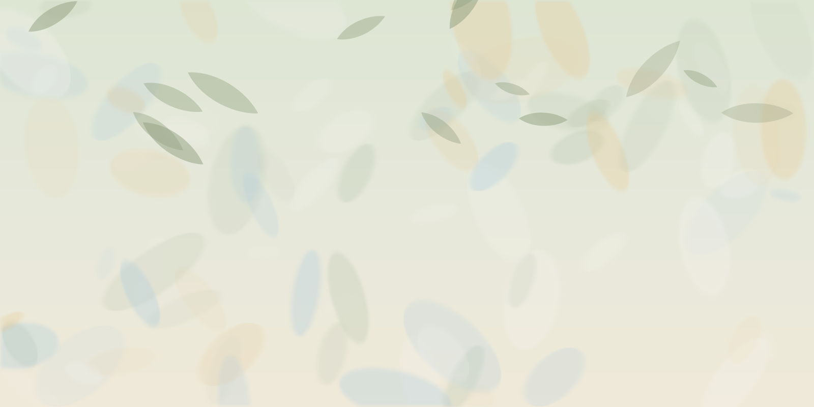

IIT JodhpurIntegrated B.Sc.–B.Ed. in Physics2024 – 2028
Aryan Mewa
Physics, teaching and storytelling.
Undergraduate in Physics at the Indian Institute of Technology Jodhpur, training to become a teacher. I have tutored students of Class 9 and 10 for three years, I take photographs, and I care about making abstract physical ideas intuitive.
Your photograph goes here
Put a photo in the
profile-photo folder, then run update-photos.command.
Academic & Creative Index
Teaching & Pedagogical Skills
Concept deconstruction, instructional planning, teaching–learning resources and scientific documentation.
Projects
Green synthesis, a Scratch quiz game and an online learning resource.
Experience
Photography and educational media: natural-light framing, and clear narration and visuals that make physical ideas intuitive.
Education
Degree, schooling and relevant coursework.
- Integrated B.Sc.–B.Ed. in Physics
IIT Jodhpur2024 – 2028 - Class 12
Matrix High School, Sikar · Rajasthan Board (RBSE) · 202383.40% - Class 10
Aakash Academy Sr. Sec. School, Jhunjhunu · Rajasthan Board (RBSE) · 202195%
Relevant courses
- Fundamental Optics
- Modern Optics
- Electromagnetic Theory
- Electronics
Achievements
Awards and recognition.
- Student of the Year Award
Birla International School, Sojat City, Pali2019
Gallery
Frames from life.

“True understanding in physical sciences comes from combining rigorous theoretical frameworks with active experimentation and interactive visualization. Discovery is most impactful when abstract ideas become intuitive for any learner.”— Aryan Mewa